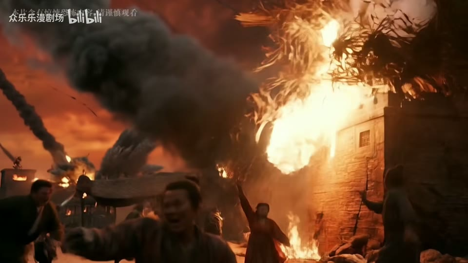

← 案例图谱AI37 / 主要视觉研究样本
原创AI漫剧《恶仙》第二回：诸天倾塌妖门开，万恶噬生炼狱来
众乐乐漫剧场 · 37万播放快照 · ≥10万 · B站原作 ↗
室内母子反打到古城红门、月下戏院、钱币/手细节，扩展同系列空间；灰红团队片尾与正文区分。

约94.070秒 · 案例代表帧从画面里找依据
这一例先看什么
室内母子反打到古城红门、月下戏院、钱币/手细节，扩展同系列空间；灰红团队片尾与正文区分。
审美判断
冷暗室内面孔由局部暖火照亮，白色书法名牌突出；远处建筑与红云大形体承担环境信息。
迁移到自己的题材
战斗、运动、竞速、预告、产品性能演示、情绪冲突的高潮。
教学提问：观众能指出谁在攻击、朝哪边、是否击中吗？哪些是原素材的动作，哪些才是新增剪接或合成？
带画面的分析单元
图像标出取样时间，对应观察中的关键状态。单帧不能独立证明运动，连续性请结合摘录。表达作用与应用场景是教学解读，复现路线是建议，不是原作者工程还原。
分析单元 01 / 0—44.95秒
黑底说明／眼部极近景／冷暗室内反打
实际观察
说明字卡后眼部特写，怪物、孩子和母亲的近景反打，人物脸有伤痕和暖火色。
表达作用（教学解读）
让一次画面替换有理由：继续动作、转换观点、给反应，或通过相似形状建立联系。
具体应用场景
动作、对话、运动、情绪混剪、多来源的视觉联系。
复现建议（非原作者工程还原）
字卡直接排版；源画面提供人物与空间，曲线压暗、局部暖光和浅景深。
直出判断：字卡/调色容易；写实人物与怪物互动需生成或3D
常见误用：只匹配颜色不顾动作阶段；方向突变；每次连接都加过渡掩盖问题。
分析单元 02 / 44.95—78.35秒
城市俯拍／红云巨门／巨大阴影
实际观察
灰色古城转红云与天门，巨大形体遮过街区，接俯视人群和举兵器怪物。
表达作用（教学解读）
通过变化与稳定的比例让信息有轻重。视觉密度来自切镜、版式与局部动画三个层面，不只靠刀数。
具体应用场景
所有形式；尤其高潮前的蓄力、解释段的阅读、回忆段的停留和快慢对照。
复现建议（非原作者工程还原）
城市源图或3D、云层、暖光、前景暗影遮罩；不同视点按尺度递进连接。
直出判断：云/光/暗影简化容易；一致建筑、人群与巨物动作较难
常见误用：全片等密度；把闪帧当新镜；高切速被当成质量分；没有稳定段供观众理解。
分析单元 03 / 78.35—98秒
红雾吞没／飞行怪物／燃烧建筑
实际观察
红色雾遮挡后怪物横过空中，牌坊和殿宇燃烧、碎片落下。
表达作用（教学解读）
用熟悉尺寸与层次，让宏大空间被感知；留停帮助观众建立尺度。
具体应用场景
世界观、建筑概念、场景设定、神圣、敬畏、孤独和压迫。
复现建议（非原作者工程还原）
红雾噪声位移，火焰/火星粒子和景深碎片；遮挡需跟随建筑。
直出判断：雾/火星容易；建筑大规模破坏和群体动作难
常见误用：没有比例参照；每镜同一宏大构图；雾遮住所有结构；反射与相机运动不一致。
分析单元 04 / 98—124.217秒
眼部黑烟生物／追随运镜／书法名牌
实际观察
人脸眼部出现黑色烟状形体，转街道飞行和俯视；怪物旁有白色竖排书法名牌，蓝色骷髅发光后黑场。
表达作用（教学解读）
把阅读顺序变成观看顺序；用字重、位置与停留表达强调、犹豫或压迫。
具体应用场景
观点短片、歌词视觉、人物宣言、章节、情绪高潮；先决定哪些词必须读懂，哪些只是纹理。
复现建议（非原作者工程还原）
黑烟可用噪声形变加遮罩，书法字层透明度/位置动画，冷蓝光晕。
直出判断：名牌/简化烟/发光容易；与眼部贴合并形成生物的连续变形难
常见误用：每个字都弹跳、整句停留不足、所有文字同时争主位。严肃叙事里无理由的回弹会削弱重量。
分析单元 05 / 124.217—175秒
眼部细节／倒地／火场双人／扭曲
实际观察
眼睛特写接腿、倒地身体、母子对话与近景，160秒附近弯曲身体和边缘色散，后见孩子低头及红色涡流。
表达作用（教学解读）
让多个时间、视角或人物关系同时出现；通过对位建立联系，而非只提高画面数量。
具体应用场景
记忆、对话、关系对照、主观视点、多人角色介绍、跨素材呼应。
复现建议（非原作者工程还原）
原人物动作素材，局部镜头变形/色散可后期模拟，涡流用极坐标噪声。
直出判断：简化色散/涡流容易；精确表演和身体动作需生成素材
常见误用：窗口太多无主次，眼位错位、边框挤脸，层的出现没有叙事理由。
分析单元 06 / 175—195秒
红色巨眼／月下戏院／飞钱币／大书法
实际观察
红涡流和巨眼后，月亮与戏院框景，大书法叠月；钱币分层飘落，转戏院匾额、人物手部。
表达作用（教学解读）
把阅读顺序变成观看顺序；用字重、位置与停留表达强调、犹豫或压迫。
具体应用场景
观点短片、歌词视觉、人物宣言、章节、情绪高潮；先决定哪些词必须读懂，哪些只是纹理。
复现建议（非原作者工程还原）
笔刷字体或字图，透明度淡出；钱币带方孔贴图分层旋转、远近虚化与遮挡。
直出判断：大字/钱币粒子/模糊容易；巨眼美术和真实手部动作需素材
常见误用：每个字都弹跳、整句停留不足、所有文字同时争主位。严肃叙事里无理由的回弹会削弱重量。
分析单元 07 / 195—245秒
人物名牌／红幕／近景反打
实际观察
紫衣蒙眼人物、白发头饰人物与红色帷幕空间，使用白色书法名牌；中近景反复连接。
表达作用（教学解读）
让一次画面替换有理由：继续动作、转换观点、给反应，或通过相似形状建立联系。
具体应用场景
动作、对话、运动、情绪混剪、多来源的视觉联系。
复现建议（非原作者工程还原）
源人物镜头，名牌图层与统一红黑调色，景深和柔光。
直出判断：名牌/调色/淡出容易；头饰服装和脸部一致性需生成控制
常见误用：只匹配颜色不顾动作阶段；方向突变；每次连接都加过渡掩盖问题。
分析单元 08 / 245—266.054秒
灰底红色局部保留／团队书法片尾／冲击环
实际观察
灰色水面与天空中保留红色巨眼武器，叠团队职务姓名；战斗有放射白环与速度模糊，最后大字黑底。
表达作用（教学解读）
把阅读顺序变成观看顺序；用字重、位置与停留表达强调、犹豫或压迫。
具体应用场景
观点短片、歌词视觉、人物宣言、章节、情绪高潮；先决定哪些词必须读懂，哪些只是纹理。
复现建议（非原作者工程还原）
选择性色彩、笔刷字层、径向模糊与环形冲击贴图；战斗画面由源提供。
直出判断：字层/选择色/冲击环容易；准确接触战斗难
常见误用：每个字都弹跳、整句停留不足、所有文字同时争主位。严肃叙事里无理由的回弹会削弱重量。
用连续画面核对
保留原研究的多段局部摘录。片段含音轨不代表已听审；本资料不评价音乐卡点或对白节奏。
短时变化怎样理解
98–102秒正文至少3次，184–188秒月下屋檐→匾额→手部2次；自动高变化片尾窗仅各确认1处，不能拿片尾代表全剧。
把镜头连接、版式更新、局部图层变化和镜内运动分开记录。所查窗口是下限，不是全片平均或AI／人工排名。
原始逐窗记录 →这次练习的约束
用三个动作片段组成8秒“准备—碰撞—结果”，先不用特效；再仅加一次光效和一次短停顿，检验是否更清楚。
先写“我希望观众明白／感到什么”，再选本页的一种手法。完成无效果基础版后再加层；解释新增层带来的收益和代价。
打开练习与复盘表 →来源、观看范围与制作归属
实际检查范围：实际查看54张5秒概览0–265（4表）；257.4–259.333与252.4–254.333共60密集帧（15/s，两个自动窗口均在片尾）；184–187.917另48帧（12/s，4表），98–101.933主体另60帧（15/s，4表）全看。源266.054014秒1080p60fps，四段4秒摘录。约245秒后为片尾，主体与片尾分开。未听审、未连续完整音画观看。
制作线索：众乐乐漫剧场，第一方37万，2026-02-27。简介明确原创AI漫剧；平台提示为疑似AI合成，与作者声明分开。片尾列原创剧本、AI分镜/视频制作与配音等团队分工，不能作为AI独立剪辑证据。
边界：作者/团队AI分镜视频署名支持参与，不是独立自动剪辑。与第一/四回同作者系列相关；未知模型原帧率，不以网页60fps推断原生生成。
播放快照保存时间（UTC）：2026-10-20T23:07:17.131771+00:00。H30制作方式为推定；同源改编、仿作和转载依原记录标注。
原始案例记录 · 选样表把你的判断留下来
笔记仅尝试保存在本机浏览器；浏览器策略可能限制本地文件存储，重要内容请导出。
沿着同一问题继续阅读
 H42
H42漫画、纸张与记忆
冷灰漫画与紫发绿眼建立人物焦点；窗列和面部反打改变心理距离，雪和纸纹承担的是空气与记忆材质。
主要样本8个分析单元
 H31
H31漫画、纸张与记忆
前段小窗拼贴逐步进入满幅能量空间，结尾缩回黑底方幅与白纸字卡；亮色高潮和留白尾声形成明显密度变化。
主要样本7个分析单元
 H14
H14漫画、纸张与记忆
漫画格、窗格阴影、锁链和粒子空间连接赛场人物，静止画层次与运动方向互相呼应。
主要样本5个分析单元